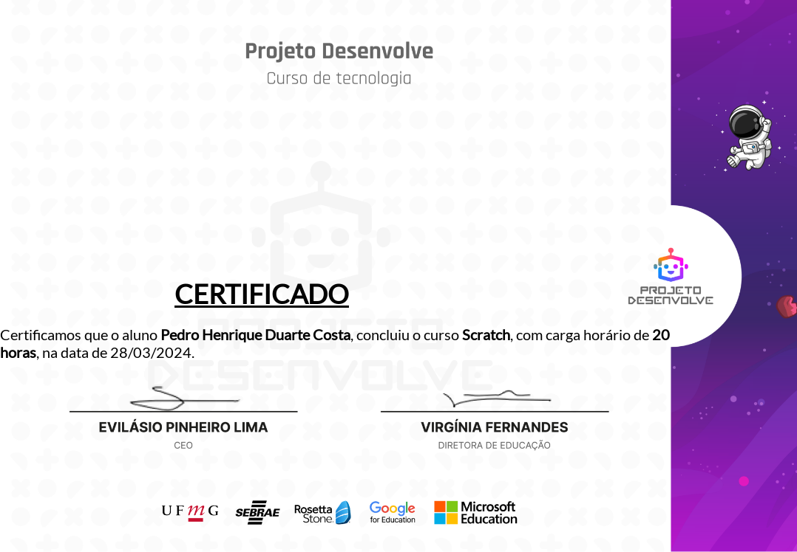
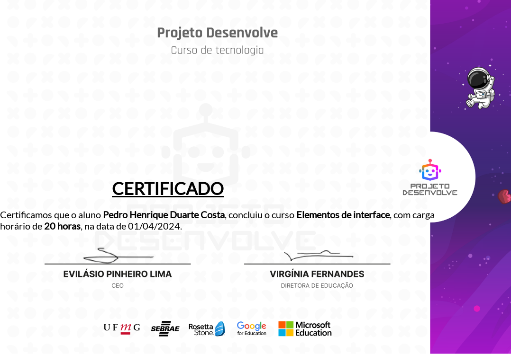
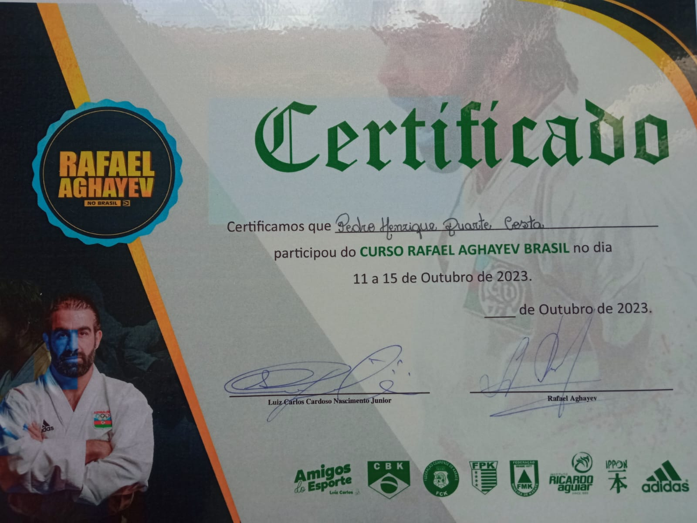
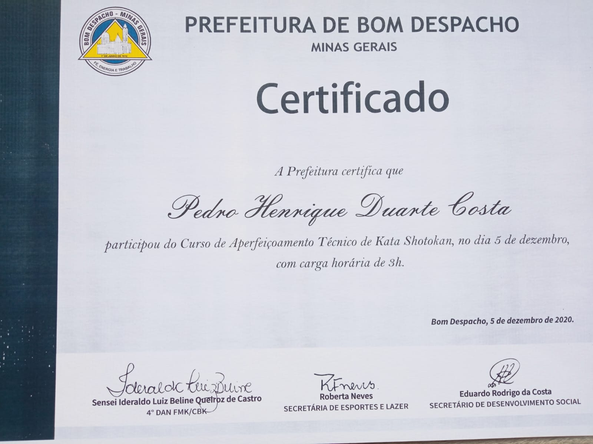
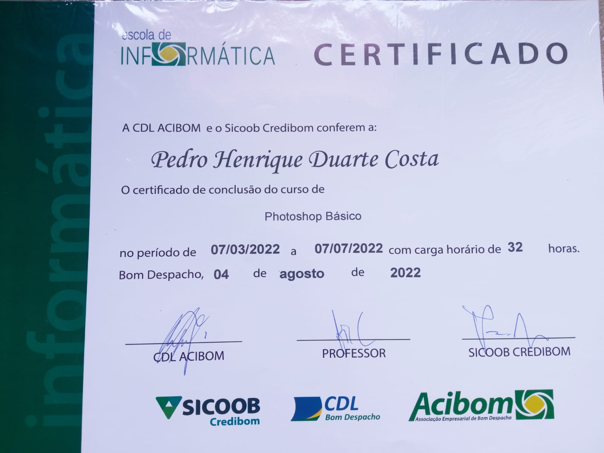
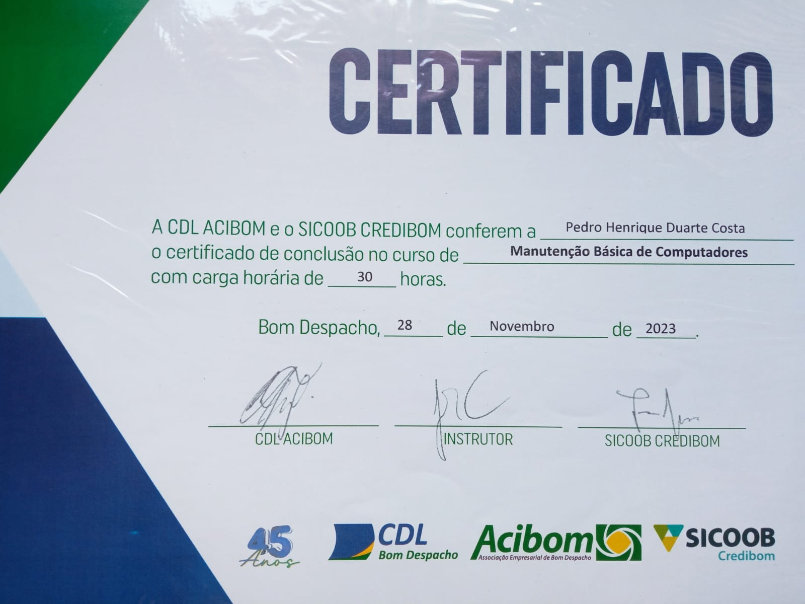
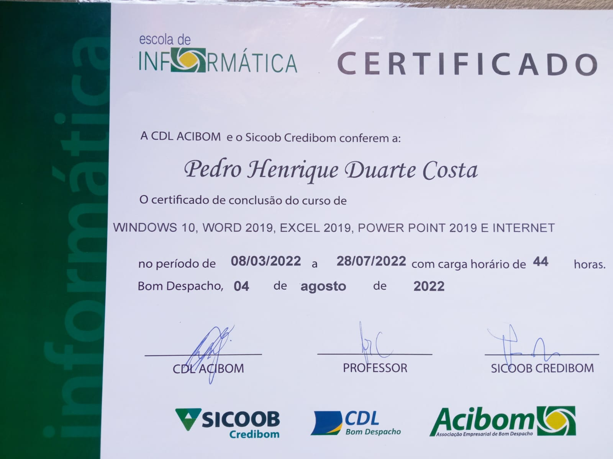

Estudante de Ensino Médio com ótimo desempenho escolar e grande disposição para o aprendizado. Capaz de oferecer um serviço de qualidade através de conhecimentos práticos e boas habilidades interpessoais, visando o desenvolvimento profissional. Formado em cursos na área tecnológica e esportiva. Minha ética de trabalho é pautada pela integridade, pela diligência e pelo compromisso com a excelência. Estou entusiasmado para contribuir com uma organização que valorize a inovação, a qualidade e o desenvolvimento contínuo. Meu objetivo é aplicar meus conhecimentos para agregar valor significativo aos projetos e iniciativas das empresas, impulsionando o sucesso mútuo a longo prazo.
Curso: Scratch
Carga horária: 20 horas
Conclusão: 28/03/2024
Curso: Elementos de Interface
Carga horária: 20 horas
Conclusão: 01/04/2024
Curso: Linux
Carga horária: 40 horas
Conclusão: 22/04/2024
Curso: Programação Básica Web
Carga horária: 60 horas
Conclusão: 05/07/2024
Curso: Rafael Aghayev Brasil - Karate
Carga horária: 4 dias
Conclusão: 15/10/2023
Curso: Aperfeiçoamento de Kata Shotokan - Karate
Carga horária: 03 horas
Conclusão: 05/12/2020
Curso: Photoshop Básico
Carga horária: 32 horas
Conclusão: 04/08/2022
Curso: Manutenção Básica de Computadores
Carga horária: 30 horas
Conclusão: 28/11/2023
Curso: Windows, Word, Excel, Power Point e internet
Carga horária: 44 horas
Conclusão: 04/08/2022
Poder Legislativo: Moções de Congratulação da Câmara Municipal de Bom Despacho, em virtude do exitoso desempenho na primeira Etapa do Circuito Mineiro de Karatê 2023, conquistando Ouro em Kumite e bronze Kata - representando Bom Despacho/MG. (04 de setembro de 2023)
Poder Executivo: Reconhecimento da Prefeitura Municipal de Bom Despacho, através da Secretaria Municipal de Desenvolvimento Social, por seu notável desempenho na grande final do Campeonato Mineiro de Karatê, na cidade de Uberlândia/MG, no dia 04 de junho de 2023, e conquistando vaga para compor a seleção Mineira de Karatê para representar o Estado de Minas no Campeonato Brasileiro de Karatê em 2023
Poder Executivo: Reconhecimento da Prefeitura Municipal de Bom Despacho, através da Secretaria Municipal de Desenvolvimento Social, por sua Classificação para a grande Final do Campeonato Mineiro de Karatê 2023, destacando Bom Despacho no cenário esportivo. 1º de junho 2023.
Poder Legislativo: Moções de Congratulação da Câmara Municipal de Bom Despacho, em virtude do exitoso desempenho na Copa Santa Luzia de Karatê 2022 – Taça Max Alberto Silva - representando Bom Despacho/MG. (14 de dezembro de 2022)
Poder Executivo: Reconhecimento da Prefeitura Municipal de Bom Despacho, através da Secretaria Municipal de Esporte e Laser, por seu notável desempenho no Campeonato Brasileiro de Karatê em Uberlândia, entre 13 e 16 de julho de 2022
Poder Executivo: Reconhecimento da Prefeitura Municipal de Bom Despacho, através da Secretaria Municipal de Esporte e Laser, pela Classificação para representar o Estado de Minas Gerais, junto a seleção Mineira de Karatê no Campeonato Brasileiro de Karatê. (03 de agosto de 2021)
1º Seminário pela Primeira Infância em Minas Gerais, promovido pela Secretaria de Estado de Desenvolvimento Social de Minas Gerais (SEDESE-MG) por meio da Subsecretaria de Direitos Humanos, realizada nos dias 5 e 6 de junho de 2024, na Escola Superior Dom Helder Câmara, na cidade de Belo Horizonte-MG.
1º Workshop Parakaratê - para trabalhar com atletas PCD – FMK e PMBD, em conformidade com as normas e regras da Confederação Brasileira de Karatê CBK – Word Karatê Federation – WKF e COI – Comitê Olímpico Internacional – Efesp BD. Data: 13 de abril de 2024
Seminário Internacional de Shiai kumite, com o Penta Campeão Mundial de karatê – Rafael Aghayev, na cidade Uberlândia – MG nos dias 11 a 15 de outubro de 2023 – CBK e FMK
Curso de aperfeiçoamento alinhamento de karatê em kihon, Kata e Kumite em conformidade com as normas técnicas mundial da WKF e CBK com o Sensei João Lisita Neto, 5º Dan FMK/CBK – 15 de março de 2020
Curso de aperfeiçoamento técnico de kata Shotokan com o Sensei Ideraldo Luiz Beline Queiroz de Castro, 4º Dan FMK/CBK – 05 de dezembro de 2020
Curso de atualização de karatê em kihon, Kata e Kumite em conformidade com as normas técnicas mundial da WKF e CBK com o Sensei João Lisita Neto, 5º Dan FMK/CBK – 02 a 03 de fevereiro de 2019